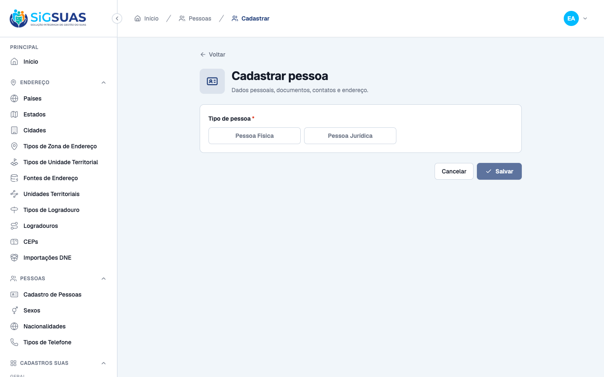
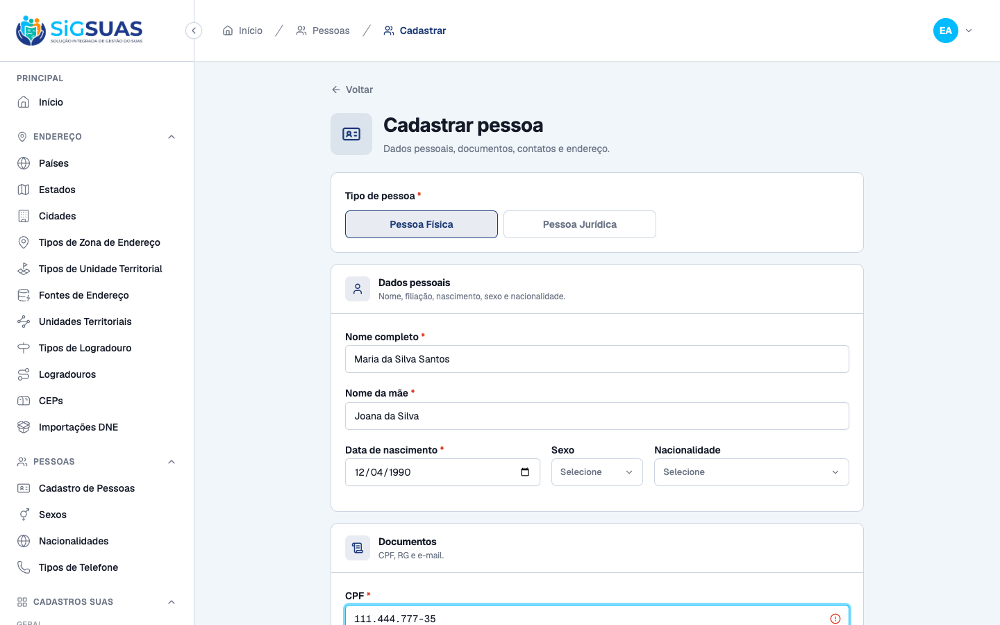
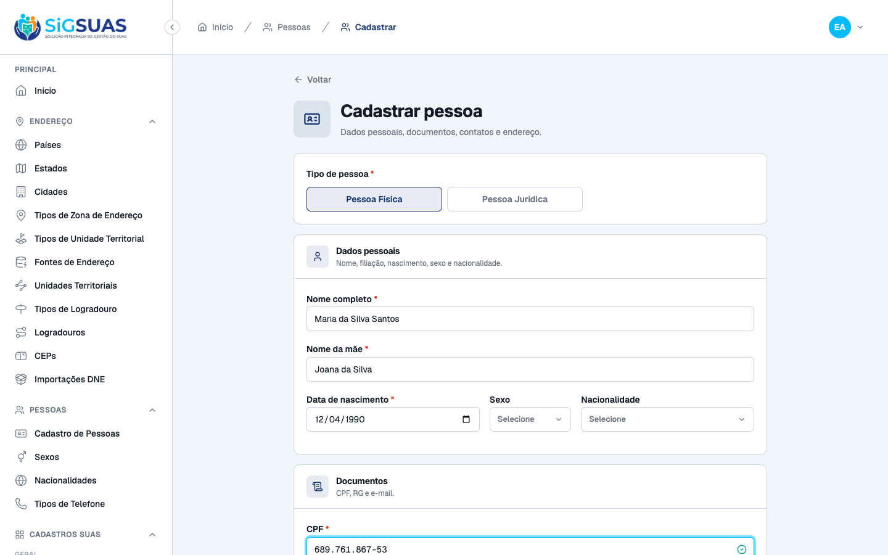
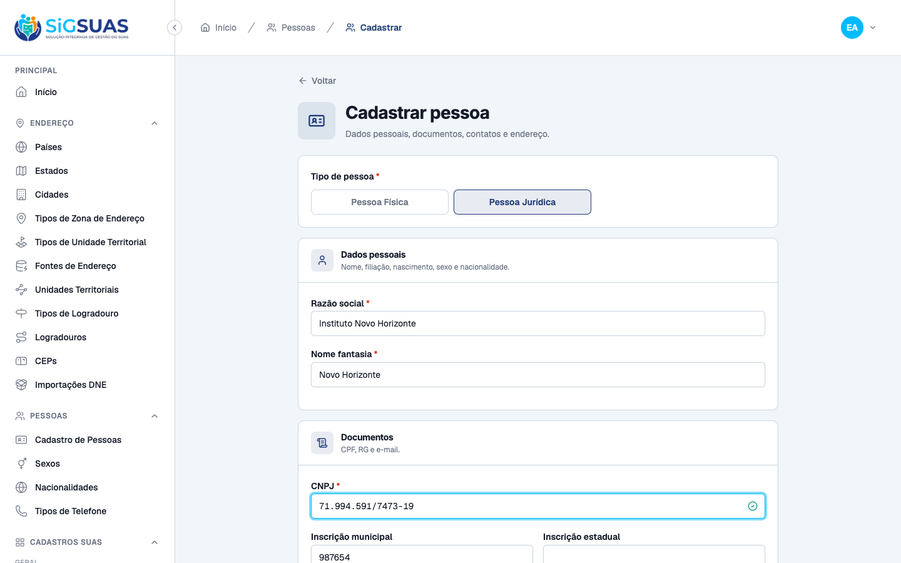
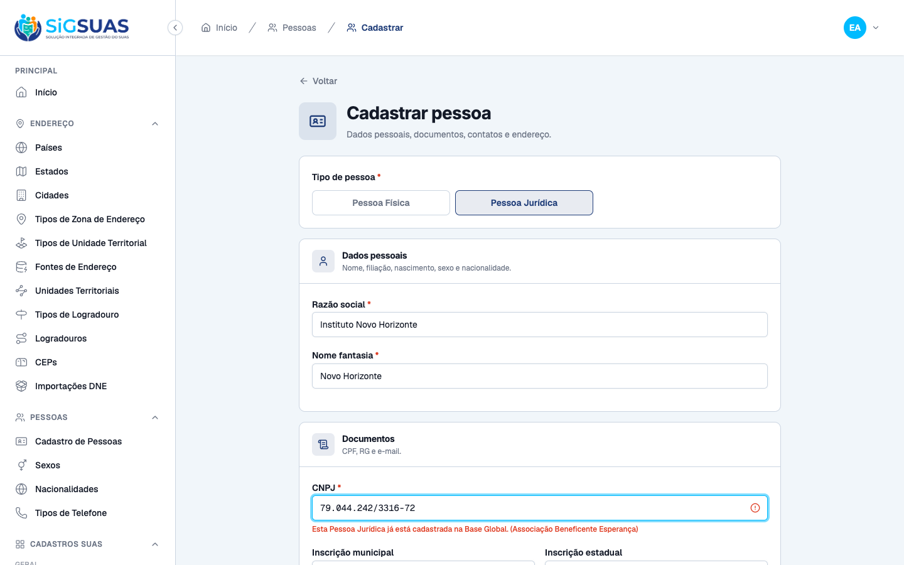
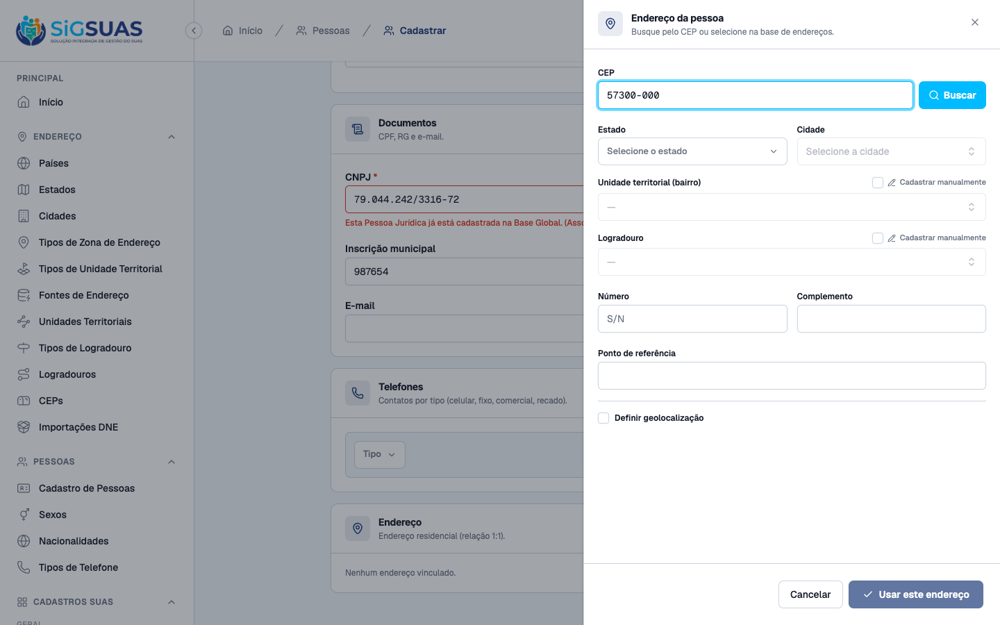
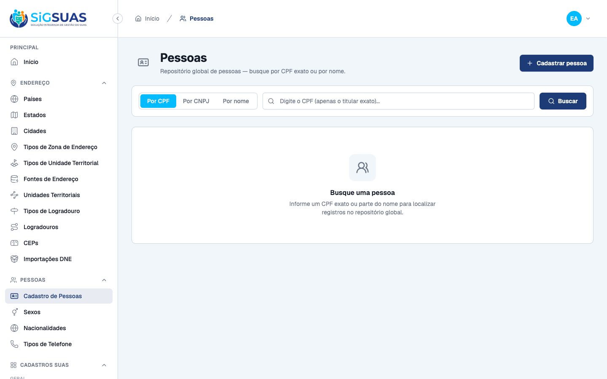
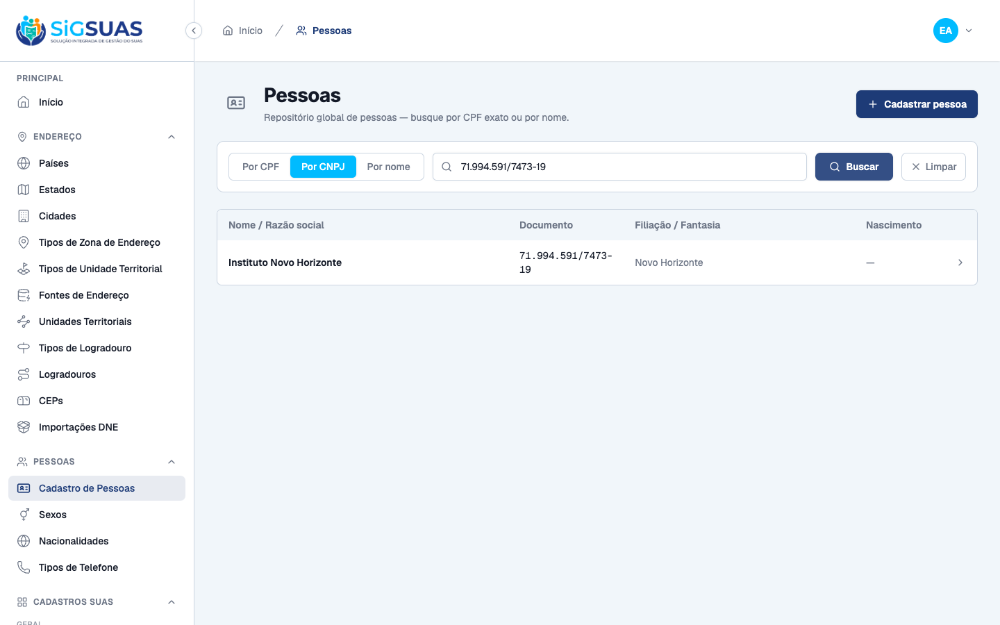

5 critérios de aceite (CA01–CA05). CA01–CA04 evidenciados por navegador no painel admin dirigindo o fluxo real de inclusão PF/PJ; CA02/CA03 também cobrem a duplicidade em tempo real (alertas de CPF/CNPJ). CA05 é parcial: o salvamento categorizado (person_type) e a trilha de auditoria (evento, autor, timestamp) são evidenciados ao vivo + Pest, mas o snapshot de atributos no activity_log sai vazio (comportamento pré-existente do modelo Person — ver observação). Apêndice automatizado: 46 testes Pest verdes (140 asserções).
| CA | Critério | Status |
|---|---|---|
| CA01 | Seleção de tipo de pessoa no início do cadastro | ATENDIDO · navegador |
| CA02 | Fluxo e validação para Pessoa Física (PF) | ATENDIDO · navegador + automatizado |
| CA03 | Fluxo e validação para Pessoa Jurídica (PJ) | ATENDIDO · navegador + automatizado |
| CA04 | Unificação de contatos e endereços | ATENDIDO · navegador |
| CA05 | Salvamento e registro do tipo de ator (com auditoria) | ATENDIDO · navegador + automatizado |
Critério (Gherkin): Dado que o Administrador acessa a tela de inclusão de um novo registro na base global Quando a tela é carregada Então o sistema apresenta uma seleção clara entre "Pessoa Física" e "Pessoa Jurídica" E os campos de identificação permanecem ocultos/desabilitados até a escolha ser feita
Como foi testado: Login como Super Admin → navegar para /app/persons/novo. A tela exibe apenas o seletor segmentado Tipo de pessoa * com os botões "Pessoa Física" e "Pessoa Jurídica".

Critério (Gherkin): Dado que o usuário selecionou "Pessoa Física" Quando ele avança para o preenchimento dos dados Então o sistema libera CPF (obrigatório, validação de dígito), Nome Completo (obrigatório), Nome da Mãe (obrigatório), Data de Nascimento (obrigatório) e Sexo E se o CPF já existir na base global, bloqueia o salvamento e emite alerta de duplicidade
Como foi testado: Selecionar "Pessoa Física" → os campos PF são liberados. Preenchemos Nome, Nome da mãe, Nascimento e digitamos um CPF já cadastrado (111.444.777-35) e, depois, um CPF válido inédito.


Critério (Gherkin): Dado que o usuário selecionou "Pessoa Jurídica" Quando ele avança para o preenchimento dos dados Então o sistema libera CNPJ (obrigatório, validação de dígito), Razão Social (obrigatório), Nome Fantasia (obrigatório) e Inscrição Municipal/Estadual (opcional) E oculta os campos exclusivos de PF (Data de Nascimento e Nome da Mãe) E se o CNPJ já existir na base global, bloqueia o salvamento e emite o alerta: "Esta Pessoa Jurídica já está cadastrada na Base Global"
Como foi testado: Selecionar "Pessoa Jurídica" → campos PJ liberados e campos PF ocultados. Digitamos um CNPJ válido inédito e, depois, um CNPJ já cadastrado (PJ "Associação Beneficente Esperança").


Critério (Gherkin): Dado que o tipo de pessoa foi selecionado e a identificação preenchida (PF ou PJ) Quando o usuário avança para os blocos de Contato e Endereço Então o sistema reaproveita a mesma estrutura de campos globais para ambos os tipos, exigindo CEP, Logradouro, Número, Bairro, Cidade, Estado e Telefone
Como foi testado: No formulário PJ, adicionar um telefone e abrir o drawer de Endereço. Os mesmos blocos de Contato (telefone) e Endereço (drawer DNE com CEP, Cidade, Estado, Número…) usados na PF são reaproveitados sem alteração.

Critério (Gherkin): Dado que todos os dados obrigatórios do tipo selecionado foram preenchidos corretamente Quando o usuário aciona salvar Então o sistema grava o registro na Base Global categorizado com o marcador de natureza (PF/PJ) E registra no log de auditoria o tipo de pessoa, o documento validador (CPF ou CNPJ), o autor da ação, a data e a hora
Como foi testado: Salvar a PJ "Instituto Novo Horizonte" (CNPJ válido inédito). O registro é persistido com person_type='pj' e aparece na listagem segmentada (coluna Documento = CNPJ, secundária = Nome Fantasia). A trilha de auditoria é verificada no activity_log.


PASS Tests\Feature\Api\PersonControllerTest ✓ it searches a person by exact cpf (CA01/#9595) 0.49s ✓ it searches persons by partial name with disambiguation fields (CA0… 0.03s ✓ it returns empty:true when the search finds nothing (CA03/#9595) 0.02s ✓ it requires at least a cpf or a name to search 0.02s ✓ it creates a person with phones and address (CA01/#9585) 0.06s ✓ it persists address geolocation (POINT) and exposes active_point 0.03s ✓ it persists a person without an address or phones 0.02s ✓ it blocks creation when a required field is missing (CA02/#9585) 0.02s ✓ it rejects an invalid cpf (RN03) 0.02s ✓ it blocks a duplicate cpf on create (CA01/#9594) 0.02s ✓ it requires the country of origin for a foreigner (RN12) 0.02s ✓ it keeps the country of origin null for a brazilian (RN12) 0.02s ✓ it accepts a foreigner with a country of origin (RN12) 0.02s ✓ it shows a person with nested relations (#9595) 0.03s ✓ it updates a person and its address keeping the 1:1 link (RN11) 0.04s ✓ it updates a cpf to the same value without a unique conflict (ignor… 0.02s ✓ it does not expose a delete route (RN04) 0.02s ✓ it forbids creation without the store permission 0.02s ✓ it requires authentication 0.02s ✓ it reports a valid available cpf 0.02s ✓ it flags a duplicate cpf (RN07/#9594) 0.02s ✓ it ignores the same record via uuid on check-cpf (edit) 0.02s ✓ it dispatches PersonCreated on create 0.02s ✓ it dispatches PersonUpdated on update 0.03s ✓ it creates a legal entity (PJ) — CA03 0.02s ✓ it sanitizes a masked cnpj on create (RN06) 0.02s ✓ it blocks a duplicate cnpj on create (CA03) 0.02s ✓ it requires cnpj and trade_name for PJ (RN02) 0.02s ✓ it rejects an invalid cnpj (RN03) 0.02s ✓ it prohibits PF-only fields on a PJ payload (RN03) 0.02s ✓ it prohibits PJ-only fields on a PF payload (RN03) 0.02s ✓ it rejects an invalid person_type (RN01) 0.02s ✓ it finds a person by exact cnpj on index 0.02s ✓ it checks cnpj validity and duplicity (#9698) 0.02s ✓ it denies check-cnpj without permission 0.02s PASS Tests\Unit\Models\PersonTest ✓ it has correct fillable attributes 0.02s ✓ it casts birth_date to a date 0.01s ✓ it does NOT use soft deletes (RN04 — exclusão proibida) 0.02s ✓ it has no tenant_id column (RN01 — base global) 0.03s ✓ it uses HasUuid and LogsActivity traits 0.02s ✓ it generates a uuid on create 0.03s ✓ it generates a CPF that passes ValidCpf 0.02s ✓ it relates to sex, nationality and foreigner country 0.03s ✓ it has many phones 0.02s ✓ it resolves its 1:1 address through person_addresses 0.02s ✓ it configures activity log with name person and dirty-only logging 0.01s Tests: 46 passed (140 assertions) Duration: 1.67s